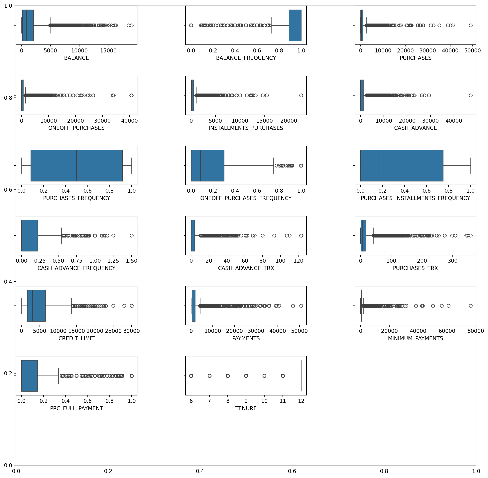

import numpy as np
from scipy import stats
import matplotlib.pyplot as plt
import matplotlib.font_manager
from pyod.models.knn import KNN
from pyod.utils.data import generate_data, get_outliers_inliers Contents:
Introduction to Anomaly or Outlier Detection.
Example of Anomaly or Outlier Detection manually created data.
Example of Anomaly or Outlier Detection with real data Credit Card dataset.
Data Visualization
Data processing
Anomaly Detection
Clustering Model implementation
Evaluation metrics implementation
Anomaly or Outlier Detection
Anomaly Detection involves identifying uncommon occurrences within a dataset that stand out as statistically different from the majority of observations. These anomalies often indicate potential problems such as credit card fraud, server malfunctions, or cyber attacks.
Anomalies fall into three primary categories:
Point Anomaly: This occurs when a data point significantly deviates from the rest of the dataset.
Contextual Anomaly: An observation is flagged as a Contextual Anomaly due to its abnormality within a specific context.
Collective Anomaly: This involves a group of data instances that collectively indicate an anomaly.
Machine Learning concepts are employed to perform anomaly detection using various approaches:
Supervised Anomaly Detection: This method relies on labeled datasets containing both normal and anomalous samples. Predictive models, such as supervised Neural Networks, Support Vector Machines, or K-Nearest Neighbors Classifiers, are utilized to classify future data points.
Unsupervised Anomaly Detection: This approach doesn’t require labeled training data. It operates on the assumptions that only a small fraction of the data is anomalous and that anomalies significantly differ from normal samples. Unsupervised methods cluster data based on similarity measures, identifying data points that fall far from the established clusters as anomalies.
Anomaly Detection with manually generated data:
# generating a random dataset with two features
X_train, y_train = generate_data(n_train = 300, train_only = True,
n_features = 2)
# Setting the percentage of outliers
outlier_fraction = 0.1
# Storing the outliers and inliners in different numpy arrays
X_outliers, X_inliers = get_outliers_inliers(X_train, y_train)
n_inliers = len(X_inliers)
n_outliers = len(X_outliers)
# Separating the two features
f1 = X_train[:, [0]].reshape(-1, 1)
f2 = X_train[:, [1]].reshape(-1, 1) xx, yy = np.meshgrid(np.linspace(-10, 10, 200),
np.linspace(-10, 10, 200))
# scatter plot
plt.scatter(f1, f2)
plt.xlabel('Feature 1')
plt.ylabel('Feature 2') Text(0, 0.5, 'Feature 2')clf = KNN(contamination = outlier_fraction)
clf.fit(X_train, y_train)
# You can print this to see all the prediction scores
scores_pred = clf.decision_function(X_train)*-1
y_pred = clf.predict(X_train)
n_errors = (y_pred != y_train).sum()
# Counting the number of errors
print('The number of prediction errors are ' + str(n_errors)) The number of prediction errors are 8/home/tpriya/CS5525/MLBlog/env/lib/python3.10/site-packages/pyod/models/base.py:430: UserWarning: y should not be presented in unsupervised learning.
warnings.warn(threshold = stats.scoreatpercentile(scores_pred, 100 * outlier_fraction)
# decision function calculates the raw
# anomaly score for every point
Z = clf.decision_function(np.c_[xx.ravel(), yy.ravel()]) * -1
Z = Z.reshape(xx.shape)
# fill blue colormap from minimum anomaly
# score to threshold value
subplot = plt.subplot(1, 2, 1)
subplot.contourf(xx, yy, Z, levels = np.linspace(Z.min(),
threshold, 10), cmap = plt.cm.Blues_r)
# draw red contour line where anomaly
# score is equal to threshold
a = subplot.contour(xx, yy, Z, levels =[threshold],
linewidths = 2, colors ='red')
# fill orange contour lines where range of anomaly
# score is from threshold to maximum anomaly score
subplot.contourf(xx, yy, Z, levels =[threshold, Z.max()], colors ='orange')
# scatter plot of inliers with white dots
b = subplot.scatter(X_train[:-n_outliers, 0], X_train[:-n_outliers, 1],
c ='white', s = 20, edgecolor ='k')
# scatter plot of outliers with black dots
c = subplot.scatter(X_train[-n_outliers:, 0], X_train[-n_outliers:, 1],
c ='black', s = 20, edgecolor ='k')
subplot.axis('tight')
subplot.legend(
[a.collections[0], b, c],
['learned decision function', 'true inliers', 'true outliers'],
prop = matplotlib.font_manager.FontProperties(size = 10),
loc ='lower right')
subplot.set_title('K-Nearest Neighbours')
subplot.set_xlim((-10, 10))
subplot.set_ylim((-10, 10))
plt.show() /tmp/ipykernel_25173/1166639198.py:33: MatplotlibDeprecationWarning: The collections attribute was deprecated in Matplotlib 3.8 and will be removed two minor releases later.
[a.collections[0], b, c],Anomaly Detection with real data:
import pandas as pd
import numpy as np
import matplotlib.pyplot as plt
import warnings
import seaborn as sns
from sklearn.decomposition import PCA
from sklearn.neighbors import NearestNeighbors
from sklearn.cluster import DBSCAN
from sklearn.cluster import KMeans
from sklearn.mixture import GaussianMixture
from sklearn.ensemble import IsolationForest
from sklearn.metrics import silhouette_score
warnings.filterwarnings("ignore")df = pd.read_csv('/home/tpriya/CS5525/MLBlog/posts/outlier-detection/CC GENERAL.csv')
print('The shape of the dataset is:', df.shape)The shape of the dataset is: (8950, 18)# check number of nulls in each column
df.isnull().sum().sort_values(ascending=False)
# konw the ratio of null in each column
round(df.isnull().sum(axis=0)*100/df.shape[0],2).sort_values(ascending=False)MINIMUM_PAYMENTS 3.50
CREDIT_LIMIT 0.01
CUST_ID 0.00
BALANCE 0.00
PRC_FULL_PAYMENT 0.00
PAYMENTS 0.00
PURCHASES_TRX 0.00
CASH_ADVANCE_TRX 0.00
CASH_ADVANCE_FREQUENCY 0.00
PURCHASES_INSTALLMENTS_FREQUENCY 0.00
ONEOFF_PURCHASES_FREQUENCY 0.00
PURCHASES_FREQUENCY 0.00
CASH_ADVANCE 0.00
INSTALLMENTS_PURCHASES 0.00
ONEOFF_PURCHASES 0.00
PURCHASES 0.00
BALANCE_FREQUENCY 0.00
TENURE 0.00
dtype: float64# save numeric columns and objects in separeted list to handle each one of them
numeric_columns = df.select_dtypes(exclude=['object']).columns.to_list()
object_columns = df.select_dtypes(include=['object']).columns.to_list()df[numeric_columns].hist(bins=15, figsize=(20,15))array([[<Axes: title={'center': 'BALANCE'}>,
<Axes: title={'center': 'BALANCE_FREQUENCY'}>,
<Axes: title={'center': 'PURCHASES'}>,
<Axes: title={'center': 'ONEOFF_PURCHASES'}>],
[<Axes: title={'center': 'INSTALLMENTS_PURCHASES'}>,
<Axes: title={'center': 'CASH_ADVANCE'}>,
<Axes: title={'center': 'PURCHASES_FREQUENCY'}>,
<Axes: title={'center': 'ONEOFF_PURCHASES_FREQUENCY'}>],
[<Axes: title={'center': 'PURCHASES_INSTALLMENTS_FREQUENCY'}>,
<Axes: title={'center': 'CASH_ADVANCE_FREQUENCY'}>,
<Axes: title={'center': 'CASH_ADVANCE_TRX'}>,
<Axes: title={'center': 'PURCHASES_TRX'}>],
[<Axes: title={'center': 'CREDIT_LIMIT'}>,
<Axes: title={'center': 'PAYMENTS'}>,
<Axes: title={'center': 'MINIMUM_PAYMENTS'}>,
<Axes: title={'center': 'PRC_FULL_PAYMENT'}>],
[<Axes: title={'center': 'TENURE'}>, <Axes: >, <Axes: >, <Axes: >]],
dtype=object)
Outliers:
plt.subplots(figsize=(15, 15))
plt.subplots_adjust(left=0.1, bottom=0.1, right=0.9, top=0.9, wspace=0.4, hspace=0.8)
for i, column in enumerate(numeric_columns, 1):
plt.subplot(7, 3, i)
sns.boxplot(df[column], orient='h')
Data Preprocessing:
df_pre=df.copy()
df_pre.drop(object_columns, axis=1, inplace=True)
df_pre.head(3)
columns_names = list(df_pre.columns)
columns_names['BALANCE',
'BALANCE_FREQUENCY',
'PURCHASES',
'ONEOFF_PURCHASES',
'INSTALLMENTS_PURCHASES',
'CASH_ADVANCE',
'PURCHASES_FREQUENCY',
'ONEOFF_PURCHASES_FREQUENCY',
'PURCHASES_INSTALLMENTS_FREQUENCY',
'CASH_ADVANCE_FREQUENCY',
'CASH_ADVANCE_TRX',
'PURCHASES_TRX',
'CREDIT_LIMIT',
'PAYMENTS',
'MINIMUM_PAYMENTS',
'PRC_FULL_PAYMENT',
'TENURE']from sklearn.impute import SimpleImputer
df_NoNull = pd.DataFrame(SimpleImputer(strategy='median').fit_transform(df_pre), columns=columns_names)
df_NoNull | BALANCE | BALANCE_FREQUENCY | PURCHASES | ONEOFF_PURCHASES | INSTALLMENTS_PURCHASES | CASH_ADVANCE | PURCHASES_FREQUENCY | ONEOFF_PURCHASES_FREQUENCY | PURCHASES_INSTALLMENTS_FREQUENCY | CASH_ADVANCE_FREQUENCY | CASH_ADVANCE_TRX | PURCHASES_TRX | CREDIT_LIMIT | PAYMENTS | MINIMUM_PAYMENTS | PRC_FULL_PAYMENT | TENURE | |
|---|---|---|---|---|---|---|---|---|---|---|---|---|---|---|---|---|---|
| 0 | 40.900749 | 0.818182 | 95.40 | 0.00 | 95.40 | 0.000000 | 0.166667 | 0.000000 | 0.083333 | 0.000000 | 0.0 | 2.0 | 1000.0 | 201.802084 | 139.509787 | 0.000000 | 12.0 |
| 1 | 3202.467416 | 0.909091 | 0.00 | 0.00 | 0.00 | 6442.945483 | 0.000000 | 0.000000 | 0.000000 | 0.250000 | 4.0 | 0.0 | 7000.0 | 4103.032597 | 1072.340217 | 0.222222 | 12.0 |
| 2 | 2495.148862 | 1.000000 | 773.17 | 773.17 | 0.00 | 0.000000 | 1.000000 | 1.000000 | 0.000000 | 0.000000 | 0.0 | 12.0 | 7500.0 | 622.066742 | 627.284787 | 0.000000 | 12.0 |
| 3 | 1666.670542 | 0.636364 | 1499.00 | 1499.00 | 0.00 | 205.788017 | 0.083333 | 0.083333 | 0.000000 | 0.083333 | 1.0 | 1.0 | 7500.0 | 0.000000 | 312.343947 | 0.000000 | 12.0 |
| 4 | 817.714335 | 1.000000 | 16.00 | 16.00 | 0.00 | 0.000000 | 0.083333 | 0.083333 | 0.000000 | 0.000000 | 0.0 | 1.0 | 1200.0 | 678.334763 | 244.791237 | 0.000000 | 12.0 |
| ... | ... | ... | ... | ... | ... | ... | ... | ... | ... | ... | ... | ... | ... | ... | ... | ... | ... |
| 8945 | 28.493517 | 1.000000 | 291.12 | 0.00 | 291.12 | 0.000000 | 1.000000 | 0.000000 | 0.833333 | 0.000000 | 0.0 | 6.0 | 1000.0 | 325.594462 | 48.886365 | 0.500000 | 6.0 |
| 8946 | 19.183215 | 1.000000 | 300.00 | 0.00 | 300.00 | 0.000000 | 1.000000 | 0.000000 | 0.833333 | 0.000000 | 0.0 | 6.0 | 1000.0 | 275.861322 | 312.343947 | 0.000000 | 6.0 |
| 8947 | 23.398673 | 0.833333 | 144.40 | 0.00 | 144.40 | 0.000000 | 0.833333 | 0.000000 | 0.666667 | 0.000000 | 0.0 | 5.0 | 1000.0 | 81.270775 | 82.418369 | 0.250000 | 6.0 |
| 8948 | 13.457564 | 0.833333 | 0.00 | 0.00 | 0.00 | 36.558778 | 0.000000 | 0.000000 | 0.000000 | 0.166667 | 2.0 | 0.0 | 500.0 | 52.549959 | 55.755628 | 0.250000 | 6.0 |
| 8949 | 372.708075 | 0.666667 | 1093.25 | 1093.25 | 0.00 | 127.040008 | 0.666667 | 0.666667 | 0.000000 | 0.333333 | 2.0 | 23.0 | 1200.0 | 63.165404 | 88.288956 | 0.000000 | 6.0 |
8950 rows × 17 columns
Log Transform for handling outliers:
# will add 1 to all values because log transform get error for numbers between 0 and 1
df_pre2 = (df_NoNull + 1)
df_log = np.log(df_pre2)
df_log.describe().T| count | mean | std | min | 25% | 50% | 75% | max | |
|---|---|---|---|---|---|---|---|---|
| BALANCE | 8950.0 | 6.161637 | 2.013303 | 0.000000 | 4.861995 | 6.773521 | 7.628099 | 9.854515 |
| BALANCE_FREQUENCY | 8950.0 | 0.619940 | 0.148590 | 0.000000 | 0.635989 | 0.693147 | 0.693147 | 0.693147 |
| PURCHASES | 8950.0 | 4.899647 | 2.916872 | 0.000000 | 3.704627 | 5.892417 | 7.013133 | 10.800403 |
| ONEOFF_PURCHASES | 8950.0 | 3.204274 | 3.246365 | 0.000000 | 0.000000 | 3.663562 | 6.360274 | 10.615512 |
| INSTALLMENTS_PURCHASES | 8950.0 | 3.352403 | 3.082973 | 0.000000 | 0.000000 | 4.499810 | 6.151961 | 10.021315 |
| CASH_ADVANCE | 8950.0 | 3.319086 | 3.566298 | 0.000000 | 0.000000 | 0.000000 | 7.016449 | 10.760839 |
| PURCHASES_FREQUENCY | 8950.0 | 0.361268 | 0.277317 | 0.000000 | 0.080042 | 0.405465 | 0.650588 | 0.693147 |
| ONEOFF_PURCHASES_FREQUENCY | 8950.0 | 0.158699 | 0.216672 | 0.000000 | 0.000000 | 0.080042 | 0.262364 | 0.693147 |
| PURCHASES_INSTALLMENTS_FREQUENCY | 8950.0 | 0.270072 | 0.281852 | 0.000000 | 0.000000 | 0.154151 | 0.559616 | 0.693147 |
| CASH_ADVANCE_FREQUENCY | 8950.0 | 0.113512 | 0.156716 | 0.000000 | 0.000000 | 0.000000 | 0.200671 | 0.916291 |
| CASH_ADVANCE_TRX | 8950.0 | 0.817570 | 1.009316 | 0.000000 | 0.000000 | 0.000000 | 1.609438 | 4.820282 |
| PURCHASES_TRX | 8950.0 | 1.894731 | 1.373856 | 0.000000 | 0.693147 | 2.079442 | 2.890372 | 5.883322 |
| CREDIT_LIMIT | 8950.0 | 8.094825 | 0.819629 | 3.931826 | 7.378384 | 8.006701 | 8.779711 | 10.308986 |
| PAYMENTS | 8950.0 | 6.624540 | 1.591763 | 0.000000 | 5.951361 | 6.754489 | 7.550732 | 10.834125 |
| MINIMUM_PAYMENTS | 8950.0 | 5.916079 | 1.169929 | 0.018982 | 5.146667 | 5.747301 | 6.671670 | 11.243832 |
| PRC_FULL_PAYMENT | 8950.0 | 0.117730 | 0.211617 | 0.000000 | 0.000000 | 0.000000 | 0.133531 | 0.693147 |
| TENURE | 8950.0 | 2.519680 | 0.130367 | 1.945910 | 2.564949 | 2.564949 | 2.564949 | 2.564949 |
f, axs = plt.subplots(figsize=(15, 15))
plt.subplots_adjust(left=0.1, bottom=0.1, right=0.9, top=0.9, wspace=0.4, hspace=0.8)
for i, column in enumerate(df_log.columns, 1):
plt.subplot(7, 3, i)
sns.boxplot(df_log[column], orient='h')df_pre2 = df_NoNull.copy()from sklearn.preprocessing import QuantileTransformer
from sklearn.preprocessing import PowerTransformer
df_power = PowerTransformer(method="yeo-johnson").fit_transform(df_pre2)df_power= pd.DataFrame(df_power, columns=columns_names)
df_power.describe().T| count | mean | std | min | 25% | 50% | 75% | max | |
|---|---|---|---|---|---|---|---|---|
| BALANCE | 8950.0 | -4.445854e-17 | 1.000056 | -2.120305 | -0.816807 | 0.151681 | 0.717913 | 2.731227 |
| BALANCE_FREQUENCY | 8950.0 | -4.699903e-16 | 1.000056 | -1.997716 | -0.598992 | 0.628612 | 0.628612 | 0.628612 |
| PURCHASES | 8950.0 | 1.238488e-16 | 1.000056 | -1.505149 | -0.654799 | 0.160770 | 0.710251 | 3.559070 |
| ONEOFF_PURCHASES | 8950.0 | 6.986342e-17 | 1.000056 | -1.000488 | -1.000488 | 0.237516 | 0.990945 | 1.959134 |
| INSTALLMENTS_PURCHASES | 8950.0 | 7.343598e-17 | 1.000056 | -1.085422 | -1.085422 | 0.361196 | 0.906100 | 2.212015 |
| CASH_ADVANCE | 8950.0 | 1.381390e-16 | 1.000056 | -0.944538 | -0.944538 | -0.944538 | 1.059052 | 1.729923 |
| PURCHASES_FREQUENCY | 8950.0 | 6.668781e-17 | 1.000056 | -1.278866 | -1.015926 | 0.119657 | 1.050283 | 1.218860 |
| ONEOFF_PURCHASES_FREQUENCY | 8950.0 | -2.540488e-17 | 1.000056 | -0.903315 | -0.903315 | -0.092230 | 0.978077 | 1.732554 |
| PURCHASES_INSTALLMENTS_FREQUENCY | 8950.0 | -7.462683e-17 | 1.000056 | -1.004445 | -1.004445 | -0.273845 | 1.069884 | 1.377136 |
| CASH_ADVANCE_FREQUENCY | 8950.0 | -9.804696e-17 | 1.000056 | -0.883204 | -0.883204 | -0.883204 | 1.016910 | 1.902718 |
| CASH_ADVANCE_TRX | 8950.0 | -1.254366e-16 | 1.000056 | -0.905801 | -0.905801 | -0.905801 | 1.044342 | 1.921254 |
| PURCHASES_TRX | 8950.0 | -2.889805e-16 | 1.000056 | -1.387624 | -0.872718 | 0.143257 | 0.729118 | 2.838620 |
| CREDIT_LIMIT | 8950.0 | -4.826927e-16 | 1.000056 | -4.573150 | -0.880590 | -0.129660 | 0.830085 | 2.851804 |
| PAYMENTS | 8950.0 | -5.716098e-17 | 1.000056 | -2.782085 | -0.608905 | -0.064284 | 0.569453 | 4.568553 |
| MINIMUM_PAYMENTS | 8950.0 | -6.668781e-16 | 1.000056 | -5.869902 | -0.643745 | -0.115812 | 0.665890 | 4.036562 |
| PRC_FULL_PAYMENT | 8950.0 | -6.986342e-17 | 1.000056 | -0.677889 | -0.677889 | -0.677889 | 0.854117 | 1.873638 |
| TENURE | 8950.0 | 7.621464e-16 | 1.000056 | -2.526612 | 0.422252 | 0.422252 | 0.422252 | 0.422252 |
f, axs = plt.subplots(figsize=(15, 15))
plt.subplots_adjust(left=0.1, bottom=0.1, right=0.9, top=0.9, wspace=0.4, hspace=0.8)
for i, column in enumerate(df_power.columns, 1):
plt.subplot(7, 3, i)
sns.boxplot(df_power[column], orient='h')df_power.hist(bins=20, figsize=(20,15))array([[<Axes: title={'center': 'BALANCE'}>,
<Axes: title={'center': 'BALANCE_FREQUENCY'}>,
<Axes: title={'center': 'PURCHASES'}>,
<Axes: title={'center': 'ONEOFF_PURCHASES'}>],
[<Axes: title={'center': 'INSTALLMENTS_PURCHASES'}>,
<Axes: title={'center': 'CASH_ADVANCE'}>,
<Axes: title={'center': 'PURCHASES_FREQUENCY'}>,
<Axes: title={'center': 'ONEOFF_PURCHASES_FREQUENCY'}>],
[<Axes: title={'center': 'PURCHASES_INSTALLMENTS_FREQUENCY'}>,
<Axes: title={'center': 'CASH_ADVANCE_FREQUENCY'}>,
<Axes: title={'center': 'CASH_ADVANCE_TRX'}>,
<Axes: title={'center': 'PURCHASES_TRX'}>],
[<Axes: title={'center': 'CREDIT_LIMIT'}>,
<Axes: title={'center': 'PAYMENTS'}>,
<Axes: title={'center': 'MINIMUM_PAYMENTS'}>,
<Axes: title={'center': 'PRC_FULL_PAYMENT'}>],
[<Axes: title={'center': 'TENURE'}>, <Axes: >, <Axes: >, <Axes: >]],
dtype=object)Feature Transform
from sklearn.preprocessing import MaxAbsScaler
from sklearn.preprocessing import MinMaxScaler
from sklearn.preprocessing import StandardScalerscale_MinMax = MinMaxScaler()
df_transformed = pd.DataFrame(scale_MinMax.fit_transform(df_NoNull), columns=columns_names)
scale_MinMax = MinMaxScaler()
df_transformed_Log = pd.DataFrame(scale_MinMax.fit_transform(df_log), columns=columns_names)
scale_MinMax = MinMaxScaler()
df_transformed_Power = pd.DataFrame(scale_MinMax.fit_transform(df_power), columns=columns_names)
scale_Standard = StandardScaler()
df_transformed_Power = pd.DataFrame(scale_Standard.fit_transform(df_power), columns=columns_names)
df_log.to_csv("./Data_Log.csv",index=False)Data with Log Transformation to Clustering and Anomaly detection
df_transformed = pd.read_csv('/home/tpriya/CS5525/MLBlog/posts/outlier-detection/Data_Log.csv')
df_transformed| BALANCE | BALANCE_FREQUENCY | PURCHASES | ONEOFF_PURCHASES | INSTALLMENTS_PURCHASES | CASH_ADVANCE | PURCHASES_FREQUENCY | ONEOFF_PURCHASES_FREQUENCY | PURCHASES_INSTALLMENTS_FREQUENCY | CASH_ADVANCE_FREQUENCY | CASH_ADVANCE_TRX | PURCHASES_TRX | CREDIT_LIMIT | PAYMENTS | MINIMUM_PAYMENTS | PRC_FULL_PAYMENT | TENURE | |
|---|---|---|---|---|---|---|---|---|---|---|---|---|---|---|---|---|---|
| 0 | 3.735304 | 0.597837 | 4.568506 | 0.000000 | 4.568506 | 0.000000 | 0.154151 | 0.000000 | 0.080042 | 0.000000 | 0.000000 | 1.098612 | 6.908755 | 5.312231 | 4.945277 | 0.000000 | 2.564949 |
| 1 | 8.071989 | 0.646627 | 0.000000 | 0.000000 | 0.000000 | 8.770896 | 0.000000 | 0.000000 | 0.000000 | 0.223144 | 1.609438 | 0.000000 | 8.853808 | 8.319725 | 6.978531 | 0.200671 | 2.564949 |
| 2 | 7.822504 | 0.693147 | 6.651791 | 6.651791 | 0.000000 | 0.000000 | 0.693147 | 0.693147 | 0.000000 | 0.000000 | 0.000000 | 2.564949 | 8.922792 | 6.434654 | 6.442994 | 0.000000 | 2.564949 |
| 3 | 7.419183 | 0.492477 | 7.313220 | 7.313220 | 0.000000 | 5.331694 | 0.080042 | 0.080042 | 0.000000 | 0.080042 | 0.693147 | 0.693147 | 8.922792 | 0.000000 | 5.747301 | 0.000000 | 2.564949 |
| 4 | 6.707735 | 0.693147 | 2.833213 | 2.833213 | 0.000000 | 0.000000 | 0.080042 | 0.080042 | 0.000000 | 0.000000 | 0.000000 | 0.693147 | 7.090910 | 6.521114 | 5.504483 | 0.000000 | 2.564949 |
| ... | ... | ... | ... | ... | ... | ... | ... | ... | ... | ... | ... | ... | ... | ... | ... | ... | ... |
| 8945 | 3.384170 | 0.693147 | 5.677165 | 0.000000 | 5.677165 | 0.000000 | 0.693147 | 0.000000 | 0.606136 | 0.000000 | 0.000000 | 1.945910 | 6.908755 | 5.788719 | 3.909748 | 0.405465 | 1.945910 |
| 8946 | 3.004851 | 0.693147 | 5.707110 | 0.000000 | 5.707110 | 0.000000 | 0.693147 | 0.000000 | 0.606136 | 0.000000 | 0.000000 | 1.945910 | 6.908755 | 5.623517 | 5.747301 | 0.000000 | 1.945910 |
| 8947 | 3.194529 | 0.606136 | 4.979489 | 0.000000 | 4.979489 | 0.000000 | 0.606136 | 0.000000 | 0.510826 | 0.000000 | 0.000000 | 1.791759 | 6.908755 | 4.410016 | 4.423869 | 0.223144 | 1.945910 |
| 8948 | 2.671218 | 0.606136 | 0.000000 | 0.000000 | 0.000000 | 3.625907 | 0.000000 | 0.000000 | 0.000000 | 0.154151 | 1.098612 | 0.000000 | 6.216606 | 3.980615 | 4.038755 | 0.223144 | 1.945910 |
| 8949 | 5.923475 | 0.510826 | 6.997824 | 6.997824 | 0.000000 | 4.852343 | 0.510826 | 0.510826 | 0.000000 | 0.287682 | 1.098612 | 3.178054 | 7.090910 | 4.161464 | 4.491878 | 0.000000 | 1.945910 |
8950 rows × 17 columns
Clustering
# To plot Elbow With Inertia
inertia = []
Range = [*range(1,11)]
for k in Range:
kmean = KMeans(n_clusters=k, max_iter=300, random_state=42)
kmean.fit(df_transformed)
inertia.append(kmean.inertia_)
plt.figure(figsize=(10,4))
plt.plot(Range, inertia, 'bx-')
plt.xlabel('k')
plt.ylabel('Inertia')
plt.title('The Elbow Method ')
plt.show()drop_variation = []
drop_variation.append(0) #add 0 in the first element
for i in range(len(inertia) -1):
dropValue = inertia[i] - inertia[i+1]
drop_variation.append(dropValue)
# select suitable k that have large drop in the variation
k = Range[np.argmax(drop_variation)]
print("Suitable number of clusters = ",k)Suitable number of clusters = 2from sklearn.cluster import KMeans
kmeans = KMeans(n_clusters=4, random_state=42).fit(df_transformed)
labels = kmeans.labels_
iner = kmeans.inertia_
cent = kmeans.cluster_centers_
print("\t~~ THIS RESULT OF K-mean SKLEARN ~~")
print('~'*50)
print("sum of elements that contain in cluster 0 :",(labels == 0).sum())
print("sum of elements that contain in cluster 1 :",(labels == 1).sum())
print("sum of elements that contain in cluster 2 :",(labels == 2).sum())
print("sum of elements that contain in cluster 3 :",(labels == 3).sum()) ~~ THIS RESULT OF K-mean SKLEARN ~~
~~~~~~~~~~~~~~~~~~~~~~~~~~~~~~~~~~~~~~~~~~~~~~~~~~
sum of elements that contain in cluster 0 : 2086
sum of elements that contain in cluster 1 : 2133
sum of elements that contain in cluster 2 : 1976
sum of elements that contain in cluster 3 : 2755from yellowbrick.cluster import SilhouetteVisualizer
from sklearn.metrics import silhouette_scorescore = silhouette_score(df_transformed, labels, metric='euclidean')
print('Silhouett Score: %.3f' % score)
visualizer = SilhouetteVisualizer(kmeans, colors='yellowbrick')
visualizer.fit(df_transformed)
visualizer.show() Silhouett Score: 0.400<Axes: title={'center': 'Silhouette Plot of KMeans Clustering for 8950 Samples in 4 Centers'}, xlabel='silhouette coefficient values', ylabel='cluster label'>from sklearn.decomposition import KernelPCA
kpca = KernelPCA(n_components=10, kernel='rbf')
df_kpca = pd.DataFrame(kpca.fit_transform(df_transformed))
df_kpca| 0 | 1 | 2 | 3 | 4 | 5 | 6 | 7 | 8 | 9 | |
|---|---|---|---|---|---|---|---|---|---|---|
| 0 | -0.322024 | 0.516047 | 0.085217 | 0.036215 | -0.015608 | -0.013188 | -0.345512 | 0.052362 | 0.067164 | 0.204233 |
| 1 | 0.571038 | 0.078448 | 0.114536 | 0.005173 | -0.033539 | 0.586146 | -0.004310 | 0.012051 | 0.002466 | 0.001755 |
| 2 | -0.097995 | -0.181926 | -0.298064 | 0.500376 | -0.085155 | 0.017446 | 0.030665 | 0.070862 | -0.147242 | 0.267388 |
| 3 | -0.031012 | -0.038757 | -0.127563 | -0.017882 | 0.049901 | -0.002018 | 0.004615 | 0.049781 | 0.032890 | -0.013316 |
| 4 | -0.042195 | -0.045667 | -0.203879 | 0.215753 | -0.010849 | -0.072370 | 0.016403 | 0.047356 | 0.017663 | 0.074450 |
| ... | ... | ... | ... | ... | ... | ... | ... | ... | ... | ... |
| 8945 | -0.376092 | 0.612240 | 0.150075 | 0.016713 | -0.014451 | 0.003618 | -0.282473 | 0.008226 | -0.007720 | 0.018540 |
| 8946 | -0.373469 | 0.605441 | 0.145621 | 0.015209 | -0.013303 | 0.002802 | -0.247563 | 0.017263 | -0.006531 | 0.050644 |
| 8947 | -0.326389 | 0.532047 | 0.093867 | 0.027570 | -0.015974 | -0.005210 | -0.444072 | 0.050256 | 0.070342 | 0.165628 |
| 8948 | 0.052839 | -0.013372 | -0.091298 | -0.008970 | 0.022265 | -0.223196 | -0.010937 | 0.064317 | 0.052705 | -0.028263 |
| 8949 | -0.046451 | -0.076523 | -0.235957 | 0.025098 | 0.191674 | 0.006375 | -0.012778 | -0.017814 | -0.028892 | -0.009289 |
8950 rows × 10 columns
from sklearn.ensemble import IsolationForest
clf = IsolationForest(random_state=0,
max_features=2,
n_estimators=100,
contamination=0.1).fit(df_kpca)
anom_pred = clf.predict(df_kpca)
anom_predarray([1, 1, 1, ..., 1, 1, 1])from sklearn.manifold import TSNE
tsne = TSNE(n_components=2,
perplexity=50,
random_state=42,
n_iter=300).fit_transform(df_transformed)df_embed_Iso = pd.DataFrame(tsne, columns=['feature1', 'feature2'])
df_embed_Iso['Labels']= pd.DataFrame(anom_pred)
df_embed_Iso| feature1 | feature2 | Labels | |
|---|---|---|---|
| 0 | 0.407689 | -5.521269 | 1 |
| 1 | -5.836224 | 2.789712 | 1 |
| 2 | 0.094771 | 3.217455 | 1 |
| 3 | -1.684396 | 6.508462 | 1 |
| 4 | 3.838952 | 4.256968 | 1 |
| ... | ... | ... | ... |
| 8945 | 0.704921 | -7.746036 | 1 |
| 8946 | 0.093061 | -7.773806 | 1 |
| 8947 | -0.642122 | -5.856036 | 1 |
| 8948 | -5.276070 | -6.167468 | 1 |
| 8949 | -2.545392 | 7.006695 | 1 |
8950 rows × 3 columns
TSNE Visualization
plt.figure(figsize=(9,5))
sns.scatterplot(
x='feature1', y='feature2',
data=df_embed_Iso,
hue=df_embed_Iso['Labels'],
palette=sns.color_palette("hls", 2)
)<Axes: xlabel='feature1', ylabel='feature2'>